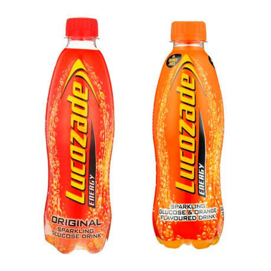
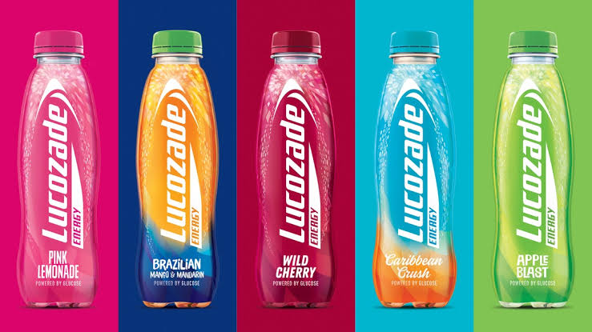
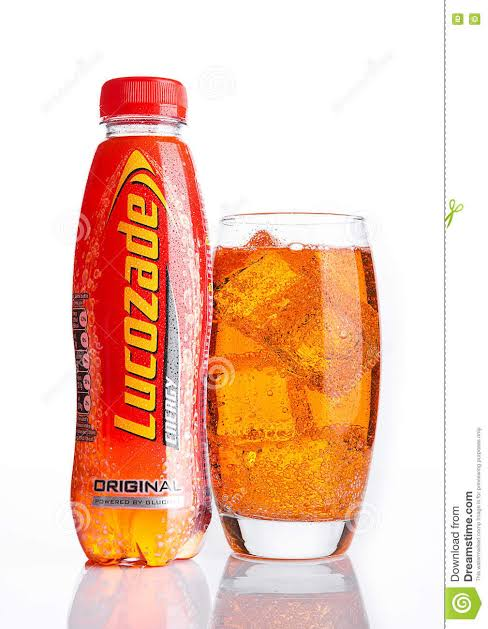

  
This is an energy drink that is used when a person is not feeling well or they don't have any energy. It contains glucose level of 6-8%. Some say it can be used to reimburse a person's body to replace energy lost after finishing exercising.